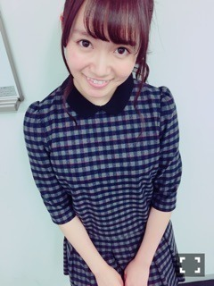
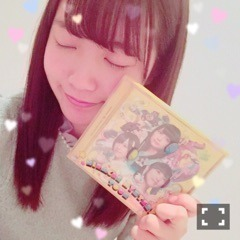

| 2015/12 01 Tue | ひめたん-0o0-その593 |
昨日は個別握手会でした！
来てくださったみなさん
本当にありがとうございました( ˇωˇ )
13thということで
初めましての方がたくさんで
びっくりしました♡♡
関東圏での握手は年内ラストなので
良いお年をの挨拶も多かった！
今回はちゃんと
お洋服紹介するねぇ～

REDYAZELのセットアップ
2部 巻き下ろし×ベレー帽
3部 ポニーテール
前に日記でヘア募集したら
ポニーテールが圧倒的人気だったので
リクエストにお答えしてみました。

MISCH MASCHのワンピース
1部 お花巻き下ろし
4部 ねじねじ巻き下ろし
らじらーでも着てるので
全身写真が気になった方は
是非公式サイトへ。
私服の系統前と変わったかな？
最近、お洋服褒められること
多いんだ(´,,•ω•,,｀)
今はブランドとかあんまり拘らず
いろんな服着たいなーと思ってるよ
もちろん可愛らしいのが好きだけれどね～
次は武道館の方も、名古屋の方も、
来年になっちゃうよーという方も、
また会えるのを楽しみにしてますo(^▽^)o
12月のお仕事もライブも頑張れそう！
たくさんのパワーを
ありがとうございました♡
日曜の夜はらじらーサンデー！
ゲストは声優アーツにイヤホンズの
高野麻里佳さん、
高橋李依さん、長久友紀さん
そして乃木坂46からサンクエトワールの
堀未央奈ちゃん、北野日奈子ちゃん、
中田花奈ちゃん、寺田蘭世ちゃんでした！
まず、前回の放送、
サンデー初のメール1万通超え！
本当にありがとうございます(´；ω；｀)
皆さんの愛が伝わってきます！
これからも、らじらー聞いて
もっとラジオ好きになってもらえるよう
頑張ろうって改めて思いました！
サンクエトワールのキャッチコピーは
「あなたに一番近い星、
サンクエトワールです！」
になりました(´｡•ω•｡`)
生放送で議論するというのは
なかなか難しいことでもあるんだけれど
ラジオだからこそ私たちの熱を
感じていただけたのかな？と思ってみたり。
リラックスしていたからこそ
みんなの普段の感じも
伝わって面白かったですね！
私は蘭世のひとことひとことに
ずっと爆笑してました(笑)
笑いすぎて途中マイクから一歩引きました(笑)
未央ちゃんもきいちゃんもかなりんも
前回では掘り下げきれなかったところまで
お届けできたのではないでしょうか。
また5人でらじらー出られたらいいな～
皆さんこれからはユニット名と一緒に
キャッチコピーも覚えて下さいませ♡
サンエトでできること
私はまだまだ探していますよ(´｡•ω•｡`)
そして、イヤホンズのお三方からなんと
アルバムをいただいてしまいました！！！

ひゃああああぁぁあああ～！！！
楽屋でオンエア聞きながら
ずっとニヤニヤしていたのに
終わったらなんとCDまで......♡
たくさん聴きます！
擦り切れるまで聴きます！
本当にありがとうございました！！
またらじらーにも遊びに来てください！！！
次回は一週目、再び乃木坂回～♪
ゲストは声優アーツに水瀬いのりさん、
乃木坂46から深川麻衣ちゃんです！
まいまいへの応援メッセージ
お待ちしています(^o^)
メールテーマも決まり次第お知らせします
お便りの宛先はこちら。
12/4の
ミュージャック
生駒、井上、堀、北野、中元が
出演しますo(^▽^)o
12/3発売の
日経エンタテインメント！
アイドルSpecial2016
にも
載せていただいているので是非。
本日11/30発売の
月刊エンタメ
にて
永島、堀、かりん、中元の4人で
インタビューしていただいてます！
アンダーライブのお話です！
質問ありがとう＼(^o^)／
全部は答えられなかったけれど
いつもより多くピックアップできたかなと
思ってます～
また気になることできたら聞いてー！

 ひめたんはおうちで
ひめたんはおうちで
どう過ごしているの？
最近はライブ映像観てることが多いかな。
アニメ観たり、ラジオ聞いたり、
音楽聴くのも好きだよ。
ひめちゃんが1番好きな
歌衣装はなんですか？
君僕かな。
思い出を差し引いたとしても
形とか色とか好きです。
本当は花冠までがセットなんだけれど
ライブでは踊るから披露できないねぇ。
今、作ってみたい料理ってあるー？？
今はねシチューとか作りたい！寒いから！
あとねーアップルパイも焼きたい！
寺田蘭世さんの事
どのくらい好きですが、、、？
私は愛情表現が得意じゃないので
多分あなたが思ってる以上に
好きですよ(´,,•ω•,,｀)
似てるところがあると思ってるので......って
あのオンエアのあとじゃ
さっぱり伝わらないんだろうけど(笑)
ひめたんの黒歴史ってありますか？
あったら教えてください
最近メンバーと、この話になったなあ
飛鳥ちゃんに
「めーちゃんは存在自体が黒歴史じゃん！」
と言われてしまいました。辛辣だよね～。
せめて過去の存在を否定してほしいよね～
まあいいんだけどね(´,,•ω•,,｀)
ひめたんと飛鳥ちゃんの関係を
教えてください（笑）
上の質問の答えでなんとなく
距離感掴んでいただけるかな？ふふ。
飛鳥ちゃんも密かに
らじらー聞いてくれてるらしいです。
いつかゲストで来て欲しいね！
ひめたんはスニーカー好きですか？
好きですよ！
最近はリーボックのスニーカーとか
気になってます(´｡•ω•｡`)
リハはナイキのダンスシューズ履いてるよ～
純奈お誕生日おめでとうー♡
この純奈超かわいい。
純奈のツイン好き～
明日から12月になります！
2014年乃木坂カレンダー
12月にはひめたん載ってるよ＼(^o^)／
めくってめくって～♡
(＊´・ω・＊)
コメント(646)
2015/12/01 00:06